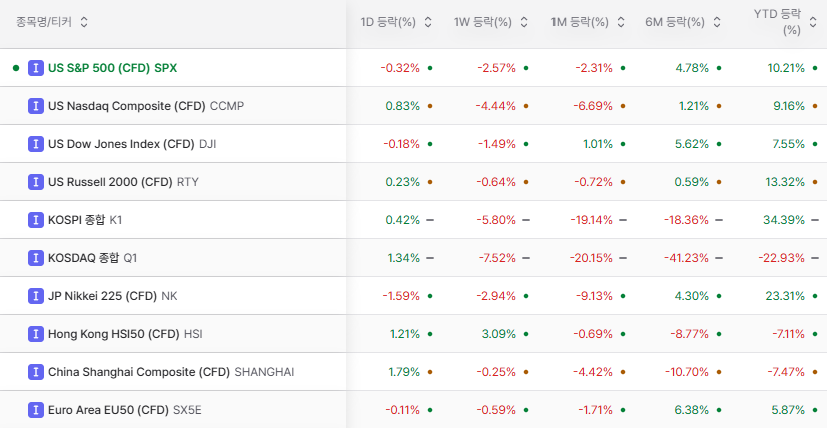
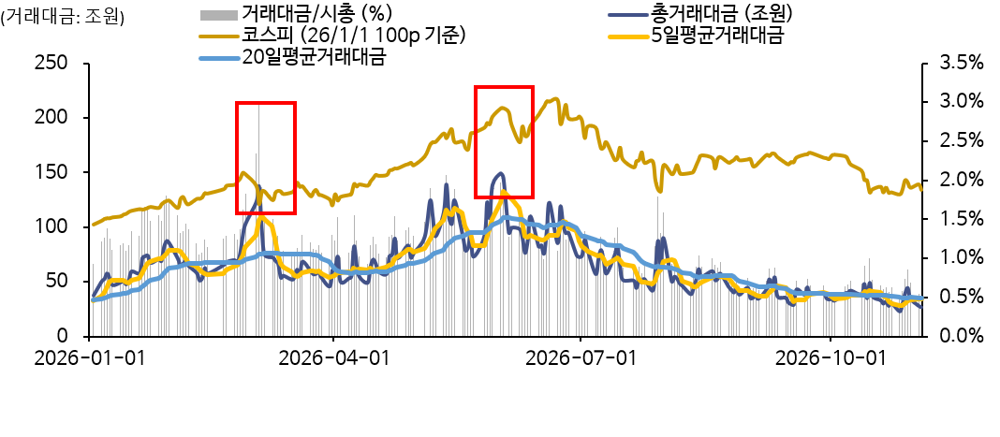

서인원 드림
Market Letter
7월과는 달랐던 10월
안녕하세요. 서인원입니다.
지난 7월에는 급격한 하락으로 공포에 투매가 나왔다고 생각했기에 용기를 내자는 레터를 드렸습니다. 이번 10월은 7월처럼 쉽사리 용기를 내자는 이야기가 나오지 않는, 무기력한 한 달이었습니다.
주요 시장 흐름 수익률

10월 시장 복기
10월 월간 하락률은 -16.19%입니다. 지난 7월과 3월의 하락률은 -22.19%, -19.08%임에도 지난 10월의 하락은 7월과 3월보다 체감적으로 더 아픈 하락이었습니다. 삼성전자와 SK하이닉스의 역대급 실적에도 시장의 거래대금이 줄어드는 것이 명확히 확인되고 있으며 시장 참여자들의 관심도 또한 낮아지고 있다는 것을 실감하고 있습니다.
2026년 월간 수익률 추이
| 날짜 | 종가 | 시가 | 고가 | 저가 | 거래량 | 변동 % |
|---|---|---|---|---|---|---|
| 2026년 11월 | 5,733.77 | 5,637.77 | 5,910.83 | 5,616.50 | 254.81M | +0.05% |
| 2026년 10월 | 5,730.74 | 6,814.49 | 7,044.67 | 5,305.98 | 5.62B | -16.19% |
| 2026년 09월 | 6,838.04 | 6,784.29 | 7,171.52 | 6,439.49 | 5.71B | +0.26% |
| 2026년 08월 | 6,820.02 | 6,358.27 | 7,216.62 | 6,080.25 | 6.48B | +3.40% |
| 2026년 07월 | 6,595.45 | 8,591.50 | 8,620.15 | 5,262.77 | 9.51B | -22.19% |
| 2026년 06월 | 8,476.48 | 8,485.67 | 9,385.59 | 7,394.46 | 10.29B | 0.00% |
| 2026년 05월 | 8,476.15 | 6,782.93 | 8,476.15 | 6,741.63 | 12.58B | +28.45% |
| 2026년 04월 | 6,598.87 | 5,330.04 | 6,750.27 | 5,170.27 | 20.84B | +30.61% |
| 2026년 03월 | 5,052.46 | 6,165.15 | 6,180.45 | 5,042.99 | 23.26B | -19.08% |
| 2026년 02월 | 6,244.13 | 5,122.62 | 6,347.41 | 4,899.30 | 17.82B | +19.52% |
| 2026년 01월 | 5,224.36 | 4,224.53 | 5,321.68 | 4,216.68 | 11.55B | +23.97% |

시장은 광기와 공포가 순환하는 곳입니다. 공포 속에서 거래대금이 줄고 시장의 유동성과 관심이 떨어지더라도, 시장을 완전히 떠나지는 않으셨으면 합니다. 5월 말~6월 초에 시장은 고점을 찍고 하락하고 있습니다. 거래대금 기준으로도 6월 1일 150조에 달하는 일일거래대금을 기록하였으며 이후 코스피가 잠시 9300p를 시도한 6월 19일 120조의 거래대금을 기록했습니다.
| KRX+NXT 합산 | 월평균거래대금 | 일최대거래대금 | 일최저거래대금 |
|---|---|---|---|
| 2026년 1월 | 62.7 | 87.3 | 46.5 |
| 2026년 2월 | 70.6 | 103.1 | 51.0 |
| 2026년 3월 | 65.3 | 136.8 | 45.5 |
| 2026년 4월 | 67.1 | 89.5 | 48.9 |
| 2026년 5월 | 101.6 | 139.2 | 71.9 |
| 2026년 6월 | 95.3 | 149.4 | 72.5 |
| 2026년 7월 | 91.7 | 122.3 | 72.5 |
| 2026년 8월 | 48.7 | 61.3 | 37.8 |
| 2026년 9월 | 47.9 | 61.3 | 34.8 |
| 2026년 10월 | 38.3 | 53.8 | 28.7 |
7월과는 달랐던 10월
시장의 광기가 주가x거래량인 거래대금으로 보여진다고 생각하며 거래대금이 크게 늘어날 때마다 항상 시장의 변곡점이 되어주는 지표로 활용하고 있습니다. 7월 말에 용기를 내자는 레터의 근거는 1)짧은 시간 이뤄진 반대매매(반대매매 당하지 않기 위한 선제적인 매도 압력 발생) 2)신용잔고 하락 3)시가총액 대비 거래대금 증가였습니다. 정성적인 요인으로는 주식 투자를 후회하는 사람들이 생기고 관심도가 떨어진다는 것을 느꼈기 때문입니다.
다만 이번 10월은 7월처럼 급격한 하락보다는 오르내림을 반복하며 가라앉는 하락이었으며 시장의 관심도 함께 식어가는 것으로 느껴졌습니다. 그래서 7월에 생각했던 근거를 이번에도 그대로 적용해 매수를 말씀드리기는 어려웠습니다. 거래대금 또한 고점 대비로는 1/5(총거래대금 6/1 150조 11/3 26.3조)까지 하락했습니다.
미실현손익과 실현손익의 의미
손실이 커질 때는 차라리 모두 정리하고 시장을 보지 않고 싶은 마음이 들기도 합니다. 반대로 손실을 확정하기 싫어 아무것도 바꾸지 못할 때도 있습니다.
공포 때문에 한 번에 전부 결정하지는 않으셨으면 합니다. 지금이 바닥이라고 단정할 수는 없습니다.
일부를 매도해 현금을 확보하고, 앞으로 보유할 이유가 더 분명한 우선순위의 종목과 자산으로 리밸런싱할 수 있습니다. 처음 투자했던 이유가 훼손된 자산이라면 손실 중이라도 정리가 필요할 수 있습니다. 반대로 투자 아이디어가 유지되는 자산이라면 가격 하락만을 이유로 매도를 결정할 필요는 없을 것입니다.
미실현손익(미실현이익, 미실현손실)을 실현한다는 것의 의미에 대해서 생각해보시고 적어도 코스피 기준 5000p 초중반대에서 전부 팔고 모든 손실을 실현하지는 마시길 바랍니다.
저 또한 장기보유와 단기매매 물량을 구분해 대응하고자 했지만 지키지 못했습니다.
1)거래대금 고점 신호 발생
2)이평선 하회 시 물량 축소
3) 거래량이 실린 장대 음봉
저 또한 복기하고 기록해 단순히 힘들었던 경험으로 끝내지 않고 다음 의사결정을 개선하겠습니다.
투자에 대해서
저는 투자란 가격과 가치의 괴리를 시간을 녹여 수익으로 바꾸는 일이라고 생각합니다. 투자자들의 마음은 가격이라는 표상에 흔들립니다. 그리고 가격, 회사, 시장 그 무엇 하나 내 마음처럼 움직여 주지 않습니다. 가격과 시장은 과격하게 움직이지만 회사는 사실 쉽사리 변하지 않습니다. 그나마 다룰 수 있는 유일한 것은 투자자 자신입니다. 때로는 시장을 더 오래 들여다보기보다 내 마음을 다스리는 일이 먼저일 수 있습니다.
당장 10년을 되돌아보더라도 여러 사건들이 있었습니다. 트럼프 당선, 미중 관세전쟁, 코로나, 러우 전쟁, SVB 파산, AI 혁명, 계엄, 상법 개정, 미국이란 전쟁, 해협 봉쇄 등 이외에도 수많은 이슈들이 있었습니다. 그럼에도 주식 시장에 엉덩이를 붙이고 충분한 시간을 기다렸다면 수익으로 보상해주는 곳이 주식시장이라고 생각합니다.
앞으로의 10년 또한 수많은 풍파를 겪겠지만 그럼에도 주식에 투자하지 않을 수는 없습니다.
궁극적으로는 “나는 이런 변동성을 견디면서도 투자를 지속해나갈 수 있는가?” 매번 반복되었고, 앞으로도 반복될 광기와 공포에도 굴하지 않고 투자할 것인지에 대해 진지하게 고민해보셨으면 합니다.
이에 대해 쉽사리 답이 나오지 않는다면 간접투자 및 지수 위주의 투자 혹은 충분한 현금 비중을 유지하며 투자를 지속하셨으면 합니다.
읽어볼 만한 글 모음
외부 글은 각 작성자의 개인 의견이며, 투자 판단 전에는 본인의 투자성향과 위험요인을 함께 확인하시기 바랍니다.
마무리
비 온 뒤 땅이 굳듯, 이번 경험이 우리를 조금 더 단단하게 만드는 계기가 되었으면 합니다. 그렇다고 힘든 시장을 무조건 버티는 것만이 답이라는 뜻은 아닙니다. 지킬 원칙은 지키고, 바꿔야 할 방식은 바꾸는 시간이 되었으면 합니다.
이번 시장에서 부족했던 부분을 돌아보며, 고객님께 더 나은 판단과 대응으로 도움이 될 수 있도록 노력하겠습니다.
보유 자산이나 앞으로의 자금 운용에 대해 상의하고 싶으시면 언제든 편하게 연락 주시기 바랍니다.
함께해주셔서 감사합니다.
2026년 11월
서인원 드림